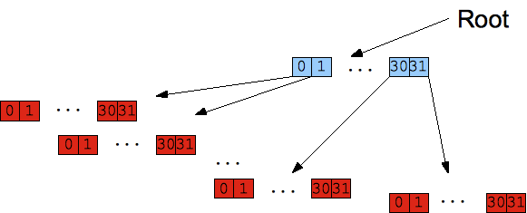

Agenda
- Concurrency and why it matters
- Current approaches (and why they fail)
- Clojure concurrency take
Setting up some context
Concurrency and why is matters?
- The end of free lunch
- Concurrency != Parallelism
Common issues
- Deadlocks
- Livelocks
- Race conditions
- Starvation
Common techniques
- Locks
- Actors
- Dataflow
- STM
Locks
- Prevalent in most languages today
- Manual low level mechanism
- Very error prone
(def o (Object.))
(defn sleep-lock [interval]
(future
(locking o
(do
(Thread/sleep interval)
(str (java.util.Date.))
))))
(def f1 (sleep-lock 3000))
(def f2 (sleep-lock 1000))
(println (str "longer " @f1))
(println (str "shorter " @f2))Lock pitfalls
- Taking too few locks
- Taking the wrong locks
- Taking locks in the wrong order
- Error recovery
- Lost wake-ups and erroneous retries
Clojure
the basic clojure philosophy
Identity state and value
- Value: an immutable magnitude, quantity, number, or composite of these
- Identity: a putative entity we associate with a series of causally related values (states) over time
- State: value of an identity at a moment in time
- Time: relative before/after ordering of causal values.
Implementation
Persistent data structures
- Implemented as 32 bit partitioned trees
- Immutable
- Data sharing
Immutability
(def a [1 2 3])
(conj a 4)
(println a)
Nth
an explanation on the binary bits should come first
public Object nth(int i){
ensureEditable();// transient access
Object[] node = arrayFor(i);
return node[i & 0x01f];
}
private Object[] arrayFor(int i){
if(i >= 0 && i < cnt) {
if(i >= tailoff())
return tail;
Node node = root;
for(int level = shift; level > 0; level -= 5)
node = (Node) node.array[(i >>> level) & 0x01f];
return node.array;
}
throw new IndexOutOfBoundsException();
} Clojure reference types
- Vars: global per thread value
- Agents: asynchronous single object store
- Atoms: simple CAS semantics
- Refs: STM managed references
- All implements ARef (some IFn)
Reference categorization
| Asynchronous | Synchronous | |
| Coordinated | Ref | |
| Independent | Agent | Atom |
Vars
- Per thread global store
- defn and def use var
- Dynamic bindings
- Mutation: set!, def, defn
set! and binding
(def v 1)
(alter-var-root #'*out* (constantly *out*))
(defn set-5 [o]
(binding [v o] ; v bound to TL
(set! v 5)
(println "p1:" v))
)
(let [thread (Thread. #(set-5 v))]
(.start thread)
(.join thread)
(println "p2:" v)) Usage
- Per thread storage is required
- Configuration (like *out*)
- AOP in functions
Implementation ctor
Var(Namespace ns, Symbol sym, Object root){
this(ns, sym);
this.root = root;
++rev;
}2. dvals holds current Frame which holds bindings and previous Frame, 3. pushThreadBindings invoked by bindings, stores a new Frame into dvals, 4. A symmetric popThreadBindings pulls previous Frame.
Framing implementation
public final class Var extends ARef implements IFn, IRef, Settable{
// ...
static final ThreadLocal<Frame> dvals = new ThreadLocal<Frame>(){
// ...
};
// ...
public static void pushThreadBindings(Associative bindings){
Frame f = dvals.get();
Associative bmap = f.bindings;
for(ISeq bs = bindings.seq(); bs != null; bs = bs.next())
{
IMapEntry e = (IMapEntry) bs.first();
Var v = (Var) e.key();
if(!v.dynamic)
throw new IllegalStateException(String.format("Can't dynamically bind non-dynamic var: %s/%s", v.ns, v.sym));
v.validate(v.getValidator(), e.val());
v.threadBound.set(true);
bmap = bmap.assoc(v, new TBox(Thread.currentThread(), e.val()));
}
dvals.set(new Frame(bmap, f));
}
// ...
}Agents intro
- Single value store
- Manipulated via messages (Actor like)
- Mutation: send, send-of
an example on how await works
Agents example
(def a (agent 5))
(dotimes [i 5]
(send a #(do (Thread/sleep 100) (inc %))))
(println "p1:" @a)
(await a)
(println "p2:" @a)Agents Usage
- Accessing single threaded components
- Side effects in STM transactions
- Queue processing
send implementation
(defn send
"Dispatch an action to an agent. Returns the agent immediately.
Subsequently, in a thread from a thread pool, the state of the agent
will be set to the value of:
(apply action-fn state-of-agent args)"
{:added "1.0"
:static true}
[^clojure.lang.Agent a f & args]
(.dispatch a (binding [*agent* a] (binding-conveyor-fn f)) args false)) dispatch creates a new actions and dispatches it the quq
dispatch implementation
public class Agent extends ARef { // ...
AtomicReference<ActionQueue> aq = new AtomicReference<ActionQueue>(ActionQueue.EMPTY);
public Object dispatch(IFn fn, ISeq args, boolean solo) {
// ...
Action action = new Action(this, fn, args, solo);
dispatchAction(action);
return this;
} // ... dispatchAction gets the current transaction, if it exists it sets the action on it The Agent's queue implementation is based on Treiber's algorithm (see http://tinyurl.com/37mydc).
dispatch/push implementation cont ..
static void dispatchAction(Action action){
LockingTransaction trans = LockingTransaction.getRunning();
if(trans != null)
trans.enqueue(action);
else if(nested.get() != null)// not sure what nested is
{
nested.set(nested.get().cons(action));
}
else
action.agent.enqueue(action);
} // ...
void enqueue(Action action){ // push
boolean queued = false;
ActionQueue prior = null;
while(!queued)// if we didn't manage to CAS
{
prior = aq.get();
queued = aq.compareAndSet(prior, new ActionQueue((IPersistentStack)prior.q.cons(action), prior.error));
}
if(prior.q.count() == 0 && prior.error == null) // only first action
action.execute();
} // ...
} // closing classpop implementation
static void doRun(Action action){// invoked from run in a Thread
try
{
nested.set(PersistentVector.EMPTY);
Throwable error = null;
try
{
Object oldval = action.agent.state;
Object newval = action.fn.applyTo(RT.cons(action.agent.state, action.args));
action.agent.setState(newval);
action.agent.notifyWatches(oldval,newval);
}
catch(Throwable e)
{
error = e;
}
// ...
boolean popped = false;
ActionQueue next = null;
while(!popped)
{
ActionQueue prior = action.agent.aq.get();
next = new ActionQueue(prior.q.pop(), error);
popped = action.agent.aq.compareAndSet(prior, next);
}
if(error == null && next.q.count() > 0) // pulling more actions
((Action) next.q.peek()).execute();
}
finally
// ...
}Atoms
- Synchronous non transactional storage
- Has CAS semantics
- Mutation: reset!, compare-and-set! and swap!
replaces the current value without taking older value into account
reset!
(def x (atom 1))
(reset! x 2)
(println @x)CAS semantics
compare-and-set!
(def x (atom 1))
(alter-var-root #'*out* (constantly *out*))
(defn update-atom []
(let [curr-val @x]
(println "update-atom: curr-val =" curr-val) ; -> 1
(Thread/sleep 50) ; give reset! time to run
(println
(compare-and-set! x curr-val (inc curr-val))))) ; -> false
(let [thread (Thread. #(update-atom))]
(.start thread)
(Thread/sleep 25) ; give thread time to call update-atom
(reset! x 3) ; happens after update-atom binds curr-val
(.join thread)) ; wait for thread to finish
(println @x) ; -> 3swap! repeatedly replay the function until not collision is made
swap!
(alter-var-root #'*out* (constantly *out*))
(def x (atom 1))
(defn update-atom [curr-val]
(println "update-atom: curr-val =" curr-val)
(Thread/sleep 50) ; give reset! time to run
(inc curr-val))
(let [thread (Thread. #(swap! x update-atom))]
(.start thread)
(Thread/sleep 25) ; give swap! time to call update-atom
(reset! x 3)
(.join thread)) ; wait for thread to finish
(println @x) ; -> 4Usage
- Global state without coordination (memoization)
- Reducing STM overhead
deref state and ctor
final public class Atom extends ARef{
final AtomicReference state;
public Atom(Object state){
this.state = new AtomicReference(state);
}
public Atom(Object state, IPersistentMap meta){
super(meta);
this.state = new AtomicReference(state);
}
public Object deref(){
return state.get();
} reset! compare-and-set
public Object reset(Object newval){
Object oldval = state.get();
validate(newval);
state.set(newval);
notifyWatches(oldval, newval);
return newval;
}
public boolean compareAndSet(Object oldv, Object newv){
validate(newv);
boolean ret = state.compareAndSet(oldv, newv);
if(ret)
notifyWatches(oldv, newv);
return ret;
} swap!
public Object swap(IFn f, Object x, Object y, ISeq args) {
for(; ;)
{
Object v = deref();
Object newv = f.applyTo(RT.listStar(v, x, y, args));
validate(newv);
if(state.compareAndSet(v, newv))
{
notifyWatches(v, newv);
return newv;
}
}
} Refs
- Coordinate storage using STM
- Mutation: reset!, swap!, ref-set, alter, commute
Transactions
- Defines a unit of work
- Commit if successful
- Retry if conflict